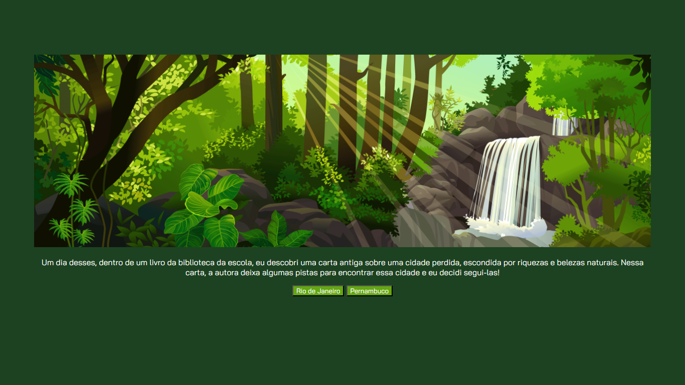
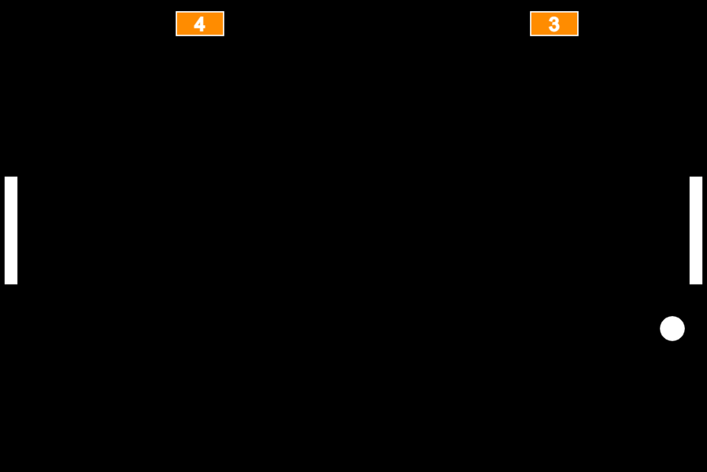

Meus projetos

Em Busca da Cidade Perdida
Este projeto mostra uma aventura em busca de uma cidade perdida. O projeto é ilustrado com imagens da ambientação e feito com HTML, CSS e JavaScript.

Pong recriado com JavaScript e Scratch
Esse projeto é uma recriação do jogo Pong, usando Scratch e JavaScript.